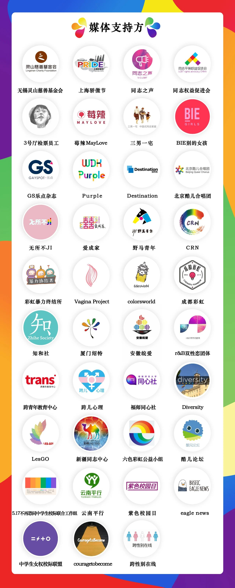

“谁也别想让我被电击”
以下文章来源于北同文化 ，作者尊重多元合作
北同文化
北京同志中心官方微信。北京同志中心成立于2008年2月14日，作为一家民间公益组织，通过在北京地区提供社区服务和开展倡导活动来增强中国同志（LGBT）人群的自我认同；推动同志运动，消除歧视，实现平等；并促进多元文化和公民社会的发展。

1. 《中国同志心理健康调研报告》，2014，中国社会科学院心理研究所、北京同志中心；
2. 《精神卫生与心理咨询从业人员对性少数群体态度调研报告》，2015，北京同志中心；
3. 《中国性少数群体生存状况报告》，2016，北京大学、联合国开发计划署亚洲同志项目、北京同志中心；
4. 《基于性倾向和性别身份的校园欺凌在线问卷调查报告》，2012，爱白文化教育中心；
5. 2014 National Center for Lesbian Rights Annual Report；
此外，我们对浪漫转身、同志权益促进会、长沙同爱、武老白等在中国扭转治疗机构数量上的数据支持表示感谢。

策划：刘沂雯、Molly
撰文：刘沂雯、Molly
视觉：刘沂雯
排版：Alan
推荐阅读
在你们的推动下，17万人加入了这个LGBT行动